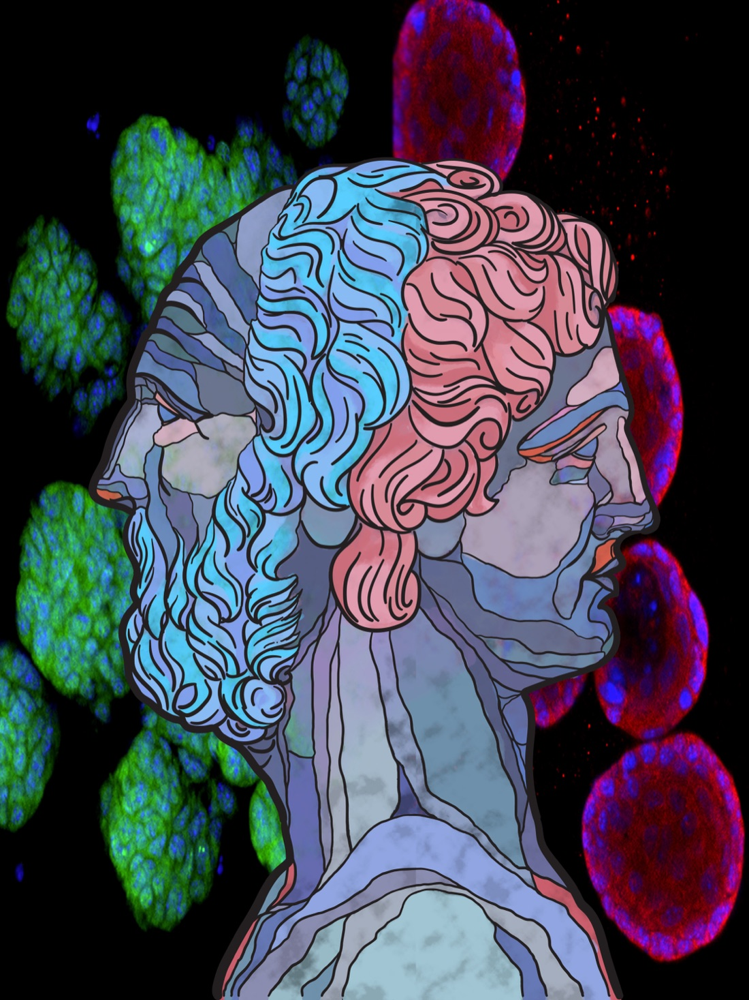

01
Lineage Plasticity and Resistance
Unravel the mechanisms of lineage plasticity-driven resistance and develop novel combination therapies to prevent or overcome this resistance.
Lineage plasticity is a hallmark of cancer and has emerged as a critical mechanism by which cancer cells circumvent targeted therapies. The pathways through which cancer cells attain lineage plasticity and resistance were previously obscure. We have delineated ectopic activation of JAK-STAT signaling as the pivotal mediator of lineage plasticity and AR therapy resistance (Nature Cancer, 2022).
JAK–STAT · Nature Cancer 2022

Fig. 01 — Lineage plasticity